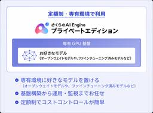
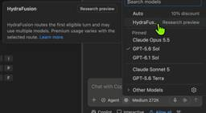

Publickey
https://www.publickey1.jp/
Enterprise ITに軸足を置き、新たにIT業界を変えつつあるクラウドコンピューティングやHTML5など最新の話題を、ブロガー独自の分析を交え、充実した記事で紹介するブログです。毎日更新しています。
フィード

さくらインターネット、GPU専有によりトークン消費量を気にせず定額で利用できる「さくらのAI Engineプライベートエディション」提供開始を発表 179
179
Publickey
さくらインターネットは、GPUサーバ上で基盤モデルを展開しマネージドサービスとして提供する「さくらのAI Engine」を、企業がGPUを専有して使える「さくらのAI Engine プライベートエディション」の提供開始を発表しました。 お知...
2日前

AWS、DuckDBをAurora PostgreSQLに統合。ETL不要で直接データレイクを読み取り可能にしたと発表 17
Publickey
Amazon Web Services（AWS）は、Amazon Aurora PostgreSQLにDuckDBを統合し、Apache Icebergなどで構築したデータレイクのデータを直接読み取って処理できるようになったことを発表しまし...
3日前

マイクロソフト、VS CodeにAIモデルのオーケストレーションで高品質低コストなAIを実現する「HydraFusion」をプレビュー実装 3
Publickey
マイクロソフトは9月30日付けでリリースされたVisual Studio Code 1.140（以下、VS Code）で、複数のAIベンダから提供されているAIモデルをオーケストレーションすることでより高品質で低コストを実現するという「Hy...
4日前

FDE（フォワードデプロイドエンジニアリング）によって開発されたAIエージェントの7割は使われず、FDEの名前で単なるコンサルティングが販売されるようになる危険が高まるとガートナーが予測 181
Publickey
米調査会社のガートナーは、ベンダーのFDE（フォワードデプロイドエンジニアあるいはフォワードデプロイドエンジニアリング）によって開発されたAIエージェントの70％が2028年までに企業に使われずに放棄されるだろう（Gartner Predi...
4日前

Cloudflare ContainersがAIエージェント向けに刷新。起動が6倍速、ファイルシステムのスナップショット機能など 4
Publickey
Cloudflareは、同社のエッジロケーションでコンテナ型仮想マシンを実行可能にする「Cloudflare Containers」をAIエージェント向けに刷新したことを発表しました。 これまでよりも起動速度が6倍となり、環境構築が容易にな...
5日前

Google、サンドボックス型コンテナランタイムの「gVisor」をCNCFに寄贈したと発表 6
Publickey
Googleはサンドボックス型コンテナランタイムの「gVisor」をCloud Native Computing Foundation（CNCF）に寄贈したことを発表しました。 gVisorはコンテナ型仮想マシンの業界標準であるOCI（Op...
5日前

世界中のソフトウェア開発者の実態を調べた「State of Devs 2026」公開。何歳？ 年収は？ モニタは何枚？ AIにどのくらいコードを書かせている？ 趣味は？ など集計結果 105
Publickey
IT関連の各種調査を行っているプロジェクトDevographicsは、世界中のソフトウェア開発者の実態などをアンケートで調査した「State of Devs 2026」の結果を公開しました。 ここでは全体の結果から興味深いところをいくつか抜...
6日前

Supabase、1サーバあたり数百万ものSQLiteをホストする「Turso」買収を発表。AIエージェントで加速するDB需要に対応 58
Publickey
PostgreSQLをベースにしたデータベースサービス「Supabase」などを提供しているSupabaseは、SQLiteをベースとしたデータベースサービスを提供する「Turso」を買収したことを発表しました。 Turso is join...
6日前

Google Cloud、ローカルマシンにインストールできる大規模分散型マルチモデルDB「Spanner Omni」正式版リリースを発表
Publickey
Google Cloudは、大規模分散データベースとしてリレーショナルモデルだけでなくグラフ型やキーバリュー型、ベクトル検索、テキスト検索などのマルチモデルに対応したデータベースソフトウェア「Spanner Omni」の正式版リリースを発表...
9日前
JavaScriptの統合ツールチェーン「Vite+ 1.0」正式リリース。ランタイム、パッケージマネージャー、ビルドツール、リンター、フォーマッターなどを統一
Publickey
JavaScript用ビルドツール「Vite」（ヴィットあるいはヴィート）を開発しているVoidZeroは、Viteを含むJavaScriptの統合ツールチェーン「Vite+」がバージョン1.0に到達したことを発表しました。 Vite+ 1...
10日前
Next.jsアプリをCloudflare WorkersやAWS LambdaなどVercel以外のサーバレス基盤へデプロイできる「Vinext 1.0」リリース
Publickey
Cloudflareは、代表的なWebアプリケーションフレームワークであるNext.jsを用いて開発したアプリケーションを、Cloudflare WorkersやAWS Lambda、NetlifyといったVercel以外のサーバレス基盤に...
10日前
WindowsでLinuxコンテナの作成や実行を可能にする「WSL Containers」正式リリース。コマンドラインとAPIから利用可能
Publickey
マイクロソフトはWSL（Windows Subsystem for Linux）の新機能として、WindowsでLinuxコンテナの作成や実行を可能にする「WSL Containers」の正式リリースを発表しました（発表ブログ、アーキテクチ...
11日前
Google Cloud、AIエージェントからの大量アクセスをPostgreSQLのプライマリDBから切り離せる「PostgreSQL for agents in AlloyDB」発表
Publickey
Google Cloudは、本番環境で動作しているPostgreSQLの処理に影響を与えないよう、AIエージェントからの読み取りワークロード用にサンドボックス化されたPostgreSQLのデータベースインスタンスを数秒でプロビジョニングする...
11日前
コーディングエージェントにGoogle Cloudの専門知識とツールを組み込む「Google Cloud Developer Plugin for AI Coding Agents」発表
Publickey
Google Cloudは、Claude CodeなどのコーディングエージェントにGoogle Cloudの専門知識とツールなどを組み込める「Google Cloud Developer Plugin for AI Coding Agent...
11日前
AWS、AIエージェントを自作できるツール「Strandsハーネス」をオープンソースで公開。特定のLLMに依存せず入れ替え可能、任意のコンテナ環境にデプロイ
Publickey
Amazon Web Services（AWS）は、GPTやClaude、Gemini、Ollamaなど主要なLLMやLLMランタイムを基にした高性能なAIエージェントを簡単に自作できるツール「Strandsハーネス」をオープンソースで公開...
12日前